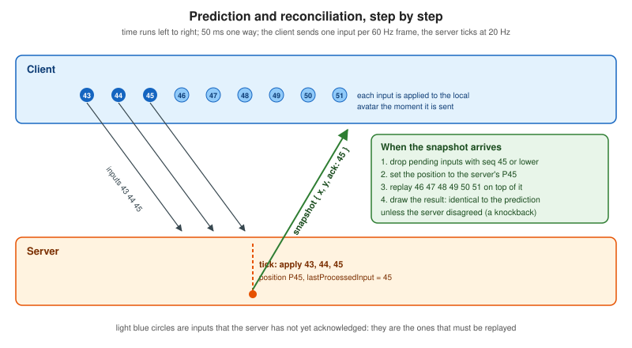
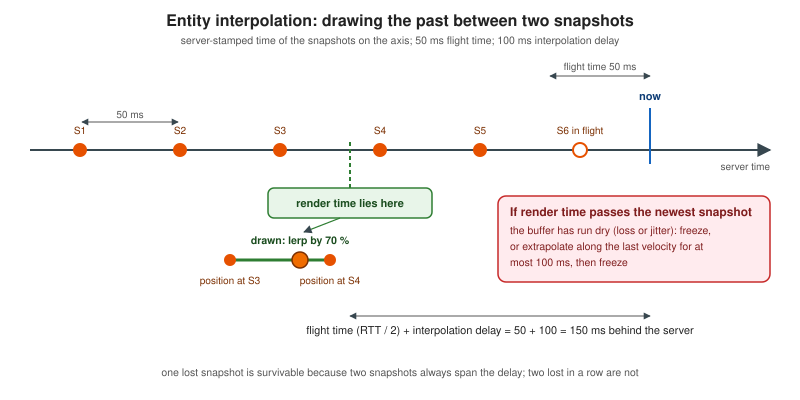
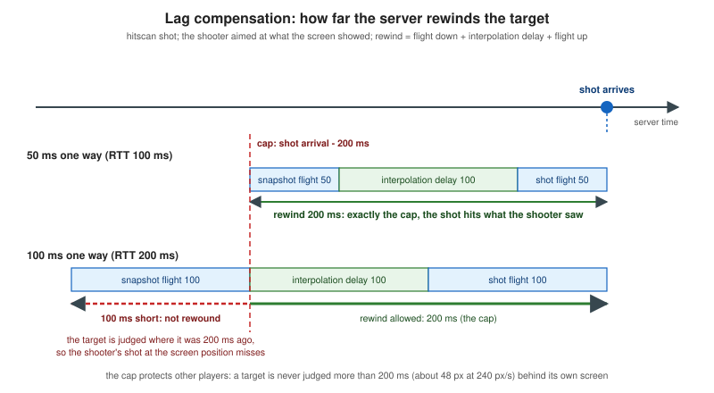

Latency Compensation
|
This content was generated with the assistance of AI and should be verified against the official documentation before being relied on in production. |
This page was written on 2026-10-24 (checked on 2026-10-24). None of the techniques here is a web standard, so there is
no specification version to pin; what is pinned is the code. Every listing was run with Node.js 24.21.0, which executes
TypeScript files directly by stripping the types (see the Node.js documentation of TypeScript support), with TypeScript
5.9.3 used only to type check, esbuild 0.25.12 to bundle the browser lab, uWebSockets.js v20.71.0 for the real server,
ws 8.22.0 to check the origin allow-list, and puppeteer-core 25.16.0 driving Chrome 155 headless. The simulations are
deterministic: a seeded random number generator drives the simulated network, so every number in the tables below is
reproduced exactly by node sim.ts.
The page belongs to the Pixel Arena scenario. Chatterbox (chat) has nothing to compensate: a message that arrives a few hundred milliseconds late is still correct. Huddle (videoconference) has the same two problems, jitter and clock offsets, but solves them inside the browser’s media stack, which keeps an adaptive jitter buffer per stream (see Stats, Quality and Bandwidth); the jitter-buffer section below shows the idea on game snapshots. In a game the player is looking at the screen and pressing keys, so every millisecond between the key and the picture is felt. The architecture that creates the problem (an authoritative server ticking at 20 Hz) is in Multiplayer Game Architecture; the finished game that wires these techniques into a canvas client is in Building a Multiplayer Game; the Colyseus variant is in Game Servers and Colyseus.
The problem in one picture
An authoritative server owns the truth, so a client that waits for the server before moving its own avatar sees every key press arrive on screen one round trip later, and then waits for the next 20 Hz tick on top of that. With 50 ms one way the delay is roughly 100 ms of network plus up to 50 ms of tick: a 240 px/s avatar is drawn 25 to 36 px behind where the player expects it (26 px on average in the first experiment below). Other players are worse off: what the client knows about them is already one flight time old, and arrives in 20 Hz steps that make a 60 Hz screen stutter. The techniques below attack three separate problems, and it is worth keeping them apart:
| Problem | Technique | What it trades |
|---|---|---|
My own avatar answers late |
Client-side prediction, then server reconciliation to correct the guess |
Complexity: the client runs the game rules and must be able to re-run them; a wrong guess is visible as a correction |
Other players move in 20 Hz steps and arrive late and unevenly |
Entity interpolation (draw the past between two snapshots), a jitter buffer to size that delay, extrapolation as a fallback |
Everything remote is drawn in the past: about 150 ms at 50 ms one way |
My shot lands where the target used to be |
Server-side lag compensation: rewind the target to what the shooter saw |
Fairness shifts: a target can be hit shortly after it reached cover |
The client and server clocks disagree |
Clock synchronisation from ping and pong timestamps |
A residual error you cannot remove on an asymmetric link |
Shared constants and messages
The Pixel Arena pages share one set of constants. The arena is 1280 by 720 px, players move at 240 px/s, the server ticks
and sends snapshots at 20 Hz (every 50 ms), the client renders at 60 Hz and sends one input per frame, every input has an
increasing 32-bit sequence number, and every snapshot carries lastProcessedInput for each player (named ack on the
wire in this page). Interpolation renders 100 ms behind, which is two snapshots; the server keeps one second of position
history and never rewinds more than 200 ms; shooting is hitscan with a 16 px hit radius.
The messages are small JSON objects here so the algorithms stay readable; the binary encoding that the finished game uses is covered in Message Design and Serialization and Building a Multiplayer Game. Nothing in the techniques depends on the encoding.
| Message | Meaning |
|---|---|
|
A list of inputs, each |
|
|
|
|
|
|
|
The result of a |
The code, file by file
All the code of this page is one small project. The pieces are deliberately independent of the transport: the server is a class that is fed messages and told to tick, and the client is a class that is fed messages and frames. The tests and the browser lab connect them with a simulated network, and the real server connects them with a WebSocket. This is why the numbers in the tables below can be trusted to describe the code that runs in production: it is the same code.
{
"name": "pixel-arena-latency",
"version": "1.0.0",
"private": true,
"type": "module",
"scripts": {
"sim": "node sim.ts",
"check": "tsc --noEmit",
"build": "esbuild demo.ts --bundle --format=esm --outfile=public/demo.js"
},
"devDependencies": {
"@types/node": "24.19.2",
"esbuild": "0.28.2",
"typescript": "7.0.2"
}
}{
"compilerOptions": {
"target": "es2023",
"module": "nodenext",
"moduleResolution": "nodenext",
"allowImportingTsExtensions": true,
"erasableSyntaxOnly": true,
"noEmit": true,
"strict": true,
"lib": ["es2023", "dom"],
"types": ["node"]
},
"include": ["*.ts"]
}The type-stripping mode of Node.js accepts only erasable TypeScript, so the code avoids enums and constructor parameter
properties, and erasableSyntaxOnly makes the compiler enforce that. Imports name the .ts file explicitly for the
same reason.
Core: constants, movement rule, messages
The single most important line of the whole page is the comment on applyInput: the client and the server must run
exactly the same movement function, with the same inputs, in the same order. Prediction works only because the guess
and the truth are produced by the same code. If the server adds a rule the client does not have (a wall, a slow zone, a
speed-up), the prediction is wrong whenever that rule matters, and reconciliation must repair it.
// arena-core.ts: constants, the shared movement function and the Pixel Arena messages.
export const ARENA_W = 1280;
export const ARENA_H = 720;
export const SPEED = 240; // px per second
export const TICK_MS = 50; // server tick, 20 Hz (also the snapshot rate)
export const FRAME_MS = 1000 / 60; // client render and input rate
export const HIT_RADIUS = 16;
export const HISTORY_MS = 1000; // lag-compensation history kept by the server
export const MAX_REWIND_MS = 200; // the server never rewinds further than this
export const RENDER_DELAY_MS = 100; // interpolation delay: two snapshots
export interface Vec {
x: number;
y: number;
}
/** One frame of player input. dx and dy are -1, 0 or 1; dt is the frame duration in ms. */
export interface Input {
seq: number;
dx: number;
dy: number;
dt: number;
}
export interface PlayerState extends Vec {
id: string;
ack: number; // lastProcessedInput
}
export type ClientMsg =
| { t: 'input'; inputs: Input[] }
| { t: 'fire'; seq: number; aimX: number; aimY: number; renderTime: number }
| { t: 'ping'; c0: number };
export type ServerMsg =
| { t: 'snap'; tick: number; time: number; players: PlayerState[] }
| { t: 'pong'; c0: number; s1: number; s2: number }
| { t: 'hit'; seq: number; target: string | null; rewindMs: number };
const clamp = (v: number, lo: number, hi: number) => Math.min(hi, Math.max(lo, v));
/** The single movement rule. The server and the client's prediction MUST both call exactly this. */
export function applyInput(p: Vec, i: Input): Vec {
const len = Math.hypot(i.dx, i.dy);
if (len === 0) return { x: p.x, y: p.y };
const step = (SPEED * i.dt) / 1000 / len;
return { x: clamp(p.x + i.dx * step, 0, ARENA_W), y: clamp(p.y + i.dy * step, 0, ARENA_H) };
}
/** Something the client cannot predict: a rocket's push. */
export function applyImpulse(p: Vec, v: Vec): Vec {
return { x: clamp(p.x + v.x, 0, ARENA_W), y: clamp(p.y + v.y, 0, ARENA_H) };
}
export const dist = (a: Vec, b: Vec) => Math.hypot(a.x - b.x, a.y - b.y);
export const lerp = (a: Vec, b: Vec, f: number): Vec => ({ x: a.x + (b.x - a.x) * f, y: a.y + (b.y - a.y) * f });
/** Deterministic random numbers (mulberry32), so every run prints the same table. */
export function rng(seed: number): () => number {
let a = seed >>> 0;
return () => {
a = (a + 0x6d2b79f5) >>> 0;
let t = a;
t = Math.imul(t ^ (t >>> 15), t | 1);
t ^= t + Math.imul(t ^ (t >>> 7), t | 61);
return ((t ^ (t >>> 14)) >>> 0) / 4294967296;
};
}A deterministic network
The tests need a network they can make bad on purpose and get the same answer from every time. Scheduler is a tiny
discrete-event loop, and SimLink is one direction of a connection with a mean latency, uniform jitter, a loss rate,
and a choice between two behaviours. A reliable link (WebSocket over TCP) never loses anything but pays a retransmission
delay for it and, because delivery is ordered, makes every later message wait behind the late one: head-of-line
blocking. An unreliable link (an unordered, unretransmitted data channel) drops lost packets and lets later ones
overtake. Both behaviours matter, and they push the techniques in different directions. See
Networking Fundamentals for why the two exist and
Data Channels for the browser API that gives a game the second one.
// sim-net.ts: a deterministic discrete-event scheduler and a lossy, jittery one-way link.
import { rng } from './arena-core.ts';
export class Scheduler {
now = 0;
private queue: { at: number; n: number; fn: () => void }[] = [];
private n = 0;
at(at: number, fn: () => void): void {
const e = { at, n: this.n++, fn };
let i = this.queue.length;
while (i > 0 && (this.queue[i - 1].at > at || (this.queue[i - 1].at === at && this.queue[i - 1].n > e.n))) i--;
this.queue.splice(i, 0, e);
}
/** Runs every event up to and including `until`, in time order. */
runUntil(until: number): void {
while (this.queue.length > 0 && this.queue[0].at <= until) {
const e = this.queue.shift()!;
this.now = e.at;
e.fn();
}
this.now = until;
}
}
export interface LinkConfig {
latencyMs: number; // mean one-way delay
jitterMs: number; // uniform +/- jitter
loss: number; // 0..1
reliable: boolean; // true: TCP-like (ordered, loss costs a retransmission); false: UDP-like (drop, reorder)
retransmitMs?: number; // extra delay of a lost packet on a reliable link
spikeEveryMs?: number; // a delay spike of spikeLenMs every spikeEveryMs
spikeLenMs?: number;
spikeExtraMs?: number;
noisyEveryMs?: number; // jitter becomes noisyJitterMs for the first noisyShare of every noisyEveryMs
noisyShare?: number;
noisyJitterMs?: number;
}
export class SimLink<T> {
private sched: Scheduler;
private cfg: LinkConfig;
private deliver: (m: T) => void;
private random: () => number;
private lastAt = 0;
sent = 0;
dropped = 0;
constructor(sched: Scheduler, cfg: LinkConfig, seed: number, deliver: (m: T) => void) {
this.sched = sched;
this.cfg = cfg;
this.deliver = deliver;
this.random = rng(seed);
}
send(msg: T): void {
this.sent++;
const c = this.cfg;
const noisy = c.noisyEveryMs !== undefined && this.sched.now % c.noisyEveryMs < c.noisyEveryMs * (c.noisyShare ?? 0.5);
const jitter = noisy ? (c.noisyJitterMs ?? c.jitterMs) : c.jitterMs;
let delay = Math.max(1, c.latencyMs + (this.random() * 2 - 1) * jitter);
if (c.spikeEveryMs && this.sched.now % c.spikeEveryMs < (c.spikeLenMs ?? 0)) {
delay += this.random() * (c.spikeExtraMs ?? 0);
}
if (this.random() < c.loss) {
if (!c.reliable) {
this.dropped++;
return;
}
delay += c.retransmitMs ?? 200;
}
let at = this.sched.now + delay;
if (c.reliable) at = Math.max(at, this.lastAt); // head-of-line blocking: never overtake
this.lastAt = at;
const copy = JSON.parse(JSON.stringify(msg)) as T;
this.sched.at(at, () => this.deliver(copy));
}
}The authoritative server
ArenaServer owns every player’s position. Each tick it applies queued inputs in sequence order, applies the effects
only the server can cause (here a knockback standing for a rocket), records the position in a history, and sends every
client a snapshot. It also answers pings and judges shots. Three details deserve attention:
-
Inputs are accepted only when
seqis greater than the last one queued, so a redundant copy or a late duplicate is harmless. That one comparison is what makes input redundancy on a lossy link safe. -
The server never trusts the numbers a client sends for step size:
dtand the direction are clamped, and the queue is bounded. Without that, a client could send adtof one second per frame and move at sixty times the speed limit. Real anti-cheat is a larger topic (see Security), but the rule that the server decides how far an input may move a player is not optional. -
The history stores the position at every tick for one second, and
positionAtinterpolates between ticks. This is the data structure lag compensation needs.
// arena-server.ts: the authoritative world. Transport-agnostic: feed it messages and call tick().
import {
applyImpulse, applyInput, dist, HISTORY_MS, HIT_RADIUS, lerp, MAX_REWIND_MS, TICK_MS,
type ClientMsg, type Input, type PlayerState, type ServerMsg, type Vec,
} from './arena-core.ts';
const MAX_INPUT_DT_MS = 25; // one 60 Hz frame is 16.7 ms
const MAX_QUEUED_INPUTS = 30; // 3 per tick is normal; a burst after a stall is bigger
const clampAxis = (v: number) => Math.min(1, Math.max(-1, Number(v) || 0));
interface Stamp extends Vec {
t: number;
}
interface Player extends Vec {
id: string;
ack: number; // lastProcessedInput
queue: Input[];
send?: (m: ServerMsg) => void;
script?: (t: number) => { dx: number; dy: number }; // a bot drives itself
impulses: Vec[];
history: Stamp[];
}
export interface ServerOptions {
lagCompensation: boolean;
maxRewindMs?: number;
}
export class ArenaServer {
tickNo = 0;
readonly players = new Map<string, Player>();
opts: ServerOptions;
constructor(opts: ServerOptions) {
this.opts = opts;
}
join(id: string, at: Vec, send?: (m: ServerMsg) => void, script?: Player['script']): void {
this.players.set(id, { id, ...at, ack: 0, queue: [], send, script, impulses: [], history: [] });
}
/** A hit by something the client cannot predict (a rocket, a push). Applied at the end of the next tick. */
knockback(id: string, v: Vec): void {
this.players.get(id)?.impulses.push(v);
}
receive(id: string, m: ClientMsg, now: number): void {
const p = this.players.get(id);
if (!p) return;
if (m.t === 'input') {
const last = p.queue.length > 0 ? p.queue[p.queue.length - 1].seq : p.ack;
for (const i of m.inputs) {
// redundant or reordered copies are dropped here; a client never chooses its own speed or step size
if (!Number.isInteger(i.seq) || i.seq <= last || p.queue.length >= MAX_QUEUED_INPUTS) continue;
p.queue.push({ seq: i.seq, dx: clampAxis(i.dx), dy: clampAxis(i.dy), dt: Math.min(MAX_INPUT_DT_MS, Math.max(0, Number(i.dt) || 0)) });
}
} else if (m.t === 'ping') {
p.send?.({ t: 'pong', c0: m.c0, s1: now, s2: now });
} else if (m.t === 'fire') {
if ([m.aimX, m.aimY, m.renderTime].every(Number.isFinite)) this.fire(p, m, now);
}
}
tick(now: number): void {
this.tickNo++;
for (const p of this.players.values()) {
if (p.script) {
const d = p.script(now);
Object.assign(p, applyInput(p, { seq: 0, dx: d.dx, dy: d.dy, dt: TICK_MS }));
}
for (const i of p.queue) {
Object.assign(p, applyInput(p, i));
p.ack = i.seq;
}
p.queue.length = 0;
for (const v of p.impulses) {
Object.assign(p, applyImpulse(p, v));
}
p.impulses.length = 0;
p.history.push({ t: now, x: p.x, y: p.y });
while (p.history[0].t < now - HISTORY_MS) p.history.shift();
}
const players: PlayerState[] = [...this.players.values()].map((p) => ({ id: p.id, x: p.x, y: p.y, ack: p.ack }));
for (const p of this.players.values()) p.send?.({ t: 'snap', tick: this.tickNo, time: now, players });
}
/** Where `p` was at server time t (linear interpolation between the stored ticks). */
positionAt(p: Player, t: number): Vec {
const h = p.history;
if (h.length === 0 || t >= h[h.length - 1].t) return h.length ? h[h.length - 1] : p;
if (t <= h[0].t) return h[0];
let i = h.length - 1;
while (h[i - 1].t > t) i--;
return lerp(h[i - 1], h[i], (t - h[i - 1].t) / (h[i].t - h[i - 1].t));
}
private fire(shooter: Player, m: Extract<ClientMsg, { t: 'fire' }>, now: number): void {
const max = this.opts.maxRewindMs ?? MAX_REWIND_MS;
// The client says which server time its screen showed; the server refuses to rewind past the cap.
const rewindTo = this.opts.lagCompensation ? Math.min(now, Math.max(now - max, m.renderTime)) : now;
const dx = m.aimX - shooter.x;
const dy = m.aimY - shooter.y;
const len = Math.hypot(dx, dy) || 1;
let target: string | null = null;
let best = Infinity;
for (const o of this.players.values()) {
if (o === shooter) continue;
const q = this.positionAt(o, rewindTo);
const along = ((q.x - shooter.x) * dx + (q.y - shooter.y) * dy) / len;
const miss = along < 0 ? dist(q, shooter) : Math.abs(((q.x - shooter.x) * dy - (q.y - shooter.y) * dx) / len);
if (miss <= HIT_RADIUS && along < best) {
best = along;
target = o.id;
}
}
shooter.send?.({ t: 'hit', seq: m.seq, target, rewindMs: now - rewindTo });
}
}Clock synchronisation
// clock-sync.ts: NTP-style offset estimation from ping/pong round trips.
export interface Sample {
offset: number; // add to the local clock to get server time
rtt: number;
}
export type Strategy = 'last' | 'mean' | 'minRtt';
export class ClockSync {
private samples: Sample[] = [];
private keep: number;
constructor(keep = 8) {
this.keep = keep;
}
/** t0: client send, t1: server receive, t2: server send, t3: client receive. */
add(t0: number, t1: number, t2: number, t3: number): void {
this.samples.push({ offset: (t1 - t0 + (t2 - t3)) / 2, rtt: t3 - t0 - (t2 - t1) });
if (this.samples.length > this.keep) this.samples.shift();
}
get ready(): boolean {
return this.samples.length > 0;
}
get rtt(): number {
return Math.min(...this.samples.map((s) => s.rtt));
}
offset(strategy: Strategy = 'minRtt'): number {
const s = this.samples;
if (strategy === 'last') return s[s.length - 1].offset;
if (strategy === 'mean') return s.reduce((a, b) => a + b.offset, 0) / s.length;
return s.reduce((best, x) => (x.rtt < best.rtt ? x : best)).offset; // the least-delayed sample
}
}The jitter buffer policy
// snapshot-delay.ts: how far behind the server clock the client renders remote players.
import { RENDER_DELAY_MS, TICK_MS } from './arena-core.ts';
export interface DelayPolicy {
/** Called for every snapshot: when it arrived (server-time estimate) and when the server stamped it. */
onSnapshot(arrival: number, stamp: number): void;
delay(): number;
}
export class FixedDelay implements DelayPolicy {
private ms: number;
constructor(ms = RENDER_DELAY_MS) {
this.ms = ms;
}
onSnapshot(): void {}
delay(): number {
return this.ms;
}
}
/** A jitter buffer: one tick plus four times the RFC 3550 smoothed interarrival jitter. */
export class AdaptiveDelay implements DelayPolicy {
private jitter = 0;
private lastTransit: number | null = null;
private min: number;
private max: number;
private k: number;
constructor(min = 2 * TICK_MS, max = 400, k = 4) {
this.min = min;
this.max = max;
this.k = k;
}
onSnapshot(arrival: number, stamp: number): void {
const transit = arrival - stamp;
if (this.lastTransit !== null) this.jitter += (Math.abs(transit - this.lastTransit) - this.jitter) / 16;
this.lastTransit = transit;
}
delay(): number {
return Math.min(this.max, Math.max(this.min, TICK_MS + this.k * this.jitter));
}
}The client, with every technique switchable
ArenaClient is where the techniques live, and the Toggles object is the list of switches. Each switch is a plain
field read on the next frame, so the browser lab can flip them while the game runs. Read it in this order:
frame (prediction), onOwnState (reconciliation), renderTime and displayedRemote (interpolation and
extrapolation), serverNow and the sync object (clock), and fire (the timestamp for lag compensation).
// arena-client.ts: prediction, reconciliation, interpolation, extrapolation and clock sync, each switchable.
import {
applyInput, FRAME_MS, lerp, type ClientMsg, type Input, type PlayerState, type ServerMsg, type Vec,
} from './arena-core.ts';
import { ClockSync, type Strategy } from './clock-sync.ts';
import { FixedDelay, type DelayPolicy } from './snapshot-delay.ts';
export interface Toggles {
prediction: boolean; // apply my own input immediately
reconciliation: 'off' | 'snap' | 'replay'; // what to do with the server's answer
smoothing: boolean; // fade corrections out instead of jumping
interpolation: boolean; // render remote players in the past, between two snapshots
extrapolation: boolean; // guess forward when there is nothing newer to show
redundancy: number; // how many unacknowledged inputs each message repeats
clock: Strategy;
}
export const ALL_ON: Toggles = {
prediction: true, reconciliation: 'replay', smoothing: false, interpolation: true, extrapolation: true,
redundancy: 1, clock: 'minRtt',
};
interface Snap extends Vec {
t: number;
}
const MAX_EXTRAPOLATION_MS = 100;
export class ArenaClient {
seq = 0;
readonly sync = new ClockSync();
private pending: Input[] = [];
private predicted: Vec = { x: 0, y: 0 };
private server: Vec = { x: 0, y: 0 }; // my last authoritative position
private offsetFade: Vec = { x: 0, y: 0 }; // correction still to be faded out
private buffers = new Map<string, Snap[]>();
private lastHit: ((m: Extract<ServerMsg, { t: 'hit' }>) => void) | undefined;
underruns = 0;
maxJump = 0; // biggest single correction applied to my own position (px)
readonly id: string;
toggles: Toggles;
private send: (m: ClientMsg) => void;
private clock: () => number; // the local clock, in ms; it has no relation to server time
private delayPolicy: DelayPolicy;
constructor(
id: string,
send: (m: ClientMsg) => void,
clock: () => number,
toggles: Toggles = ALL_ON,
delayPolicy: DelayPolicy = new FixedDelay(),
) {
this.id = id;
this.send = send;
this.clock = clock;
this.toggles = toggles;
this.delayPolicy = delayPolicy;
}
spawn(at: Vec): void {
this.predicted = { ...at };
this.server = { ...at };
}
serverNow(): number {
return this.clock() + (this.sync.ready ? this.sync.offset(this.toggles.clock) : 0);
}
ping(): void {
this.send({ t: 'ping', c0: this.clock() });
}
/** Called once per rendered frame with the keys currently held. */
frame(dx: number, dy: number): void {
const input: Input = { seq: ++this.seq, dx, dy, dt: FRAME_MS };
this.pending.push(input);
if (this.toggles.prediction) this.predicted = applyInput(this.predicted, input);
const repeat = this.pending.slice(-Math.max(1, this.toggles.redundancy));
this.send({ t: 'input', inputs: repeat });
const f = Math.pow(0.5, FRAME_MS / 100); // halve the remaining correction every 100 ms
this.offsetFade = { x: this.offsetFade.x * f, y: this.offsetFade.y * f };
}
onMessage(m: ServerMsg): void {
if (m.t === 'pong') {
this.sync.add(m.c0, m.s1, m.s2, this.clock());
} else if (m.t === 'snap') {
const arrival = this.serverNow();
this.delayPolicy.onSnapshot(arrival, m.time);
for (const p of m.players) p.id === this.id ? this.onOwnState(p) : this.push(p, m.time);
} else if (m.t === 'hit') {
this.lastHit?.(m);
}
}
private onOwnState(p: PlayerState): void {
this.server = { x: p.x, y: p.y };
this.pending = this.pending.filter((i) => i.seq > p.ack); // acknowledged inputs are done
const mode = this.toggles.reconciliation;
if (!this.toggles.prediction || mode === 'off') {
if (!this.toggles.prediction) this.predicted = { ...this.server };
return;
}
const before = this.displayed();
let s: Vec = { ...this.server };
if (mode === 'replay') for (const i of this.pending) s = applyInput(s, i); // re-apply what the server has not seen
this.predicted = s;
if (this.toggles.smoothing) {
this.offsetFade = { x: before.x - s.x, y: before.y - s.y };
}
const after = this.displayed();
this.maxJump = Math.max(this.maxJump, Math.hypot(after.x - before.x, after.y - before.y));
}
private push(p: Vec & { id: string }, t: number): void {
const b = this.buffers.get(p.id) ?? [];
if (b.length > 0 && t <= b[b.length - 1].t) return; // late duplicate
b.push({ t, x: p.x, y: p.y });
while (b.length > 40) b.shift();
this.buffers.set(p.id, b);
}
/** Where my own avatar is drawn. */
displayed(): Vec {
const base = this.toggles.prediction ? this.predicted : this.server;
return { x: base.x + this.offsetFade.x, y: base.y + this.offsetFade.y };
}
/**
* The server time that remote players are drawn at: now, minus the time a snapshot spends in flight
* (half the best round trip), minus the interpolation delay (two snapshots, or what the jitter buffer asks for).
*/
renderTime(): number {
const flight = this.sync.ready ? this.sync.rtt / 2 : 0;
return this.serverNow() - flight - this.delayPolicy.delay();
}
/** Where a remote player is drawn. */
displayedRemote(id: string): Vec | null {
const b = this.buffers.get(id);
if (!b || b.length === 0) return null;
const newest = b[b.length - 1];
const now = this.serverNow();
if (!this.toggles.interpolation) {
return this.toggles.extrapolation ? this.extrapolate(b, now) : { x: newest.x, y: newest.y };
}
const t = this.renderTime();
if (t <= b[0].t) return { x: b[0].x, y: b[0].y };
if (t >= newest.t) {
this.underruns++; // the buffer ran dry: nothing newer than the render time
return this.toggles.extrapolation ? this.extrapolate(b, t) : { x: newest.x, y: newest.y };
}
let i = b.length - 1;
while (b[i - 1].t > t) i--;
return lerp(b[i - 1], b[i], (t - b[i - 1].t) / (b[i].t - b[i - 1].t));
}
private extrapolate(b: Snap[], t: number): Vec {
const n = b[b.length - 1];
if (b.length < 2) return { x: n.x, y: n.y };
const o = b[b.length - 2];
const dt = Math.min(MAX_EXTRAPOLATION_MS, Math.max(0, t - n.t));
const k = dt / (n.t - o.t);
return { x: n.x + (n.x - o.x) * k, y: n.y + (n.y - o.y) * k };
}
/** Fire a hitscan shot at a point on screen; the server is told which server time the screen showed. */
fire(aim: Vec, onResult?: (m: Extract<ServerMsg, { t: 'hit' }>) => void): void {
this.lastHit = onResult;
const renderTime = this.toggles.interpolation ? this.renderTime() : this.serverNow();
this.send({ t: 'fire', seq: this.seq, aimX: aim.x, aimY: aim.y, renderTime });
}
}Wiring it together
World creates a server, bots and clients, and connects them with one SimLink per direction. The client’s local clock
is deliberately wrong: it starts about an hour away from the server’s clock and drifts by 30 parts per million, so the
clock synchronisation is exercised in every experiment, not only in its own. truth reads back the server’s own path,
sampled continuously, so that an experiment can score what a client drew against what really happened.
// world.ts: wires one server and one or more clients together over simulated links.
import { FRAME_MS, rng, TICK_MS, type ClientMsg, type ServerMsg, type Vec } from './arena-core.ts';
import { ArenaClient, ALL_ON, type Toggles } from './arena-client.ts';
import { ArenaServer } from './arena-server.ts';
import { SimLink, Scheduler, type LinkConfig } from './sim-net.ts';
import { FixedDelay, type DelayPolicy } from './snapshot-delay.ts';
export const CLOCK_OFFSET = 3_700_123.4; // the client clock starts about an hour after the server's
export const CLOCK_DRIFT = 30e-6; // 30 ppm
export interface WorldOptions {
up: LinkConfig; // client to server
down: LinkConfig; // server to client
toggles?: Partial<Toggles>;
lagCompensation?: boolean;
maxRewindMs?: number;
delay?: DelayPolicy;
seed?: number;
}
/** A direction that changes every 300 to 900 ms; deterministic for a given seed. */
export function randomWalker(seed: number, idleChance = 0.15): (t: number) => { dx: number; dy: number } {
const r = rng(seed);
const dirs = [[1, 0], [-1, 0], [0, 1], [0, -1], [1, 1], [-1, 1], [1, -1], [-1, -1]];
const segs: { until: number; dx: number; dy: number }[] = [];
for (let t = 0; t < 400_000; ) {
t += 300 + r() * 600;
const d = r() < idleChance ? [0, 0] : dirs[Math.floor(r() * dirs.length)];
segs.push({ until: t, dx: d[0], dy: d[1] });
}
let i = 0;
return (t) => {
if (i > 0 && segs[i - 1].until > t) i = 0;
while (segs[i].until < t) i++;
return segs[i];
};
}
/** A winding path that reverses at random: a target that is hard to hit. */
export function strafer(seed: number): (t: number) => { dx: number; dy: number } {
const r = rng(seed);
const flips: number[] = [];
let sign = 1;
for (let t = 0; t < 400_000; ) {
t += 400 + r() * 500;
flips.push(t);
}
return (t) => {
sign = 1;
for (const f of flips) {
if (f > t) break;
sign = -sign;
}
const a = (2 * Math.PI * t) / 6000 + 1.2 * Math.sin(t / 700);
return { dx: sign * Math.cos(a), dy: sign * Math.sin(a) };
};
}
export class World {
readonly sched = new Scheduler();
readonly server: ArenaServer;
readonly clients = new Map<string, ArenaClient>();
readonly tickLog = new Map<string, { t: number; x: number; y: number }[]>();
private opts: WorldOptions;
private n = 0;
constructor(opts: WorldOptions) {
this.opts = opts;
this.server = new ArenaServer({ lagCompensation: opts.lagCompensation ?? true, maxRewindMs: opts.maxRewindMs });
const tick = () => {
this.server.tick(this.sched.now);
for (const p of this.server.players.values()) {
const log = this.tickLog.get(p.id) ?? [];
log.push({ t: this.sched.now, x: p.x, y: p.y });
this.tickLog.set(p.id, log);
}
this.sched.at(this.sched.now + TICK_MS, tick);
};
this.sched.at(TICK_MS, tick);
}
/** The local clock of a client: an hour off and drifting. */
clockOf(): () => number {
return () => this.sched.now * (1 + CLOCK_DRIFT) + CLOCK_OFFSET;
}
addBot(id: string, at: Vec, script: (t: number) => { dx: number; dy: number }): void {
this.server.join(id, at, undefined, script);
}
addClient(
id: string, at: Vec, input: (t: number) => { dx: number; dy: number },
toggles: Partial<Toggles> = {}, delay: DelayPolicy = this.opts.delay ?? new FixedDelay(),
onFrame?: (c: ArenaClient, t: number) => void,
): ArenaClient {
const seed = (this.opts.seed ?? 1) * 1000 + ++this.n * 17;
let client: ArenaClient;
const up = new SimLink<ClientMsg>(this.sched, this.opts.up, seed + 1, (m) => this.server.receive(id, m, this.sched.now));
const down = new SimLink<ServerMsg>(this.sched, this.opts.down, seed + 2, (m) => client.onMessage(m));
client = new ArenaClient(id, (m) => up.send(m), this.clockOf(), { ...ALL_ON, ...this.opts.toggles, ...toggles }, delay);
this.server.join(id, at, (m) => down.send(m));
this.clients.set(id, client);
client.spawn(at); // the client starts where the server put it
// Clock sync: a burst of 8 pings, then one per second.
for (let k = 0; k < 8; k++) this.sched.at(50 + k * 100, () => client.ping());
const pingLoop = () => {
client.ping();
this.sched.at(this.sched.now + 1000, pingLoop);
};
this.sched.at(1000, pingLoop);
const frame = () => {
const d = input(this.sched.now);
client.frame(d.dx, d.dy);
onFrame?.(client, this.sched.now);
this.sched.at(this.sched.now + FRAME_MS, frame);
};
this.sched.at(FRAME_MS, frame);
return client;
}
/** The server path of `id`, sampled continuously (linear between the logged ticks). */
truth(id: string, t: number): Vec {
const log = this.tickLog.get(id)!;
const k = Math.min(log.length - 2, Math.max(0, Math.floor(t / TICK_MS) - 1));
const a = log[k];
const b = log[k + 1];
const f = Math.min(1, Math.max(0, (t - a.t) / (b.t - a.t)));
return { x: a.x + (b.x - a.x) * f, y: a.y + (b.y - a.y) * f };
}
}
export function stats(xs: number[]): { mean: number; p95: number; max: number } {
const s = [...xs].sort((a, b) => a - b);
return { mean: xs.reduce((a, b) => a + b, 0) / xs.length, p95: s[Math.floor(s.length * 0.95)], max: s[s.length - 1] };
}Source: MDN: Performance.now()
Client-side prediction
Without prediction, the client draws its avatar where the last snapshot says it is. The key press travels to the
server, waits for the next tick, is simulated, and comes back in a snapshot: a round trip plus up to one tick of
waiting. With prediction the client also applies each input to its own avatar immediately, using the same movement rule,
and remembers the input in a list of pending inputs (those the server has not yet acknowledged). In the code above this
is three lines in frame: build the input with the next sequence number, apply it, push it on pending.
Prediction is a guess, so it needs a way to be corrected; with it alone the client and server drift apart the first time they disagree. The experiment below makes them disagree on purpose: every 2.5 seconds the server pushes the player 60 px (a rocket), something the client cannot predict. The error is the distance between what the client draws and an "ideal" avatar in a world with zero latency, which received the same keys and the same pushes instantly.
Server reconciliation with input sequence numbers
Each input carries a sequence number, and every snapshot says, per player, the last sequence number the server has
applied (lastProcessedInput, ack on the wire). When a snapshot for the local player arrives, the client:
-
discards every pending input with
seqless than or equal toack, since the server has already included them; -
sets its position to the authoritative position in the snapshot;
-
re-applies the remaining pending inputs on top, in order.
If nothing unpredictable happened, step 3 reproduces the prediction exactly and the player sees nothing. If the server
pushed the player, the push is in the authoritative position, and replaying the pending inputs on top of it gives a
position that is both correct and responsive. Two simpler variants are common and wrong: ignoring the snapshot
(prediction without reconciliation), and snapping to the snapshot position without replaying (the avatar jumps backward
by the whole round trip’s worth of movement, every snapshot). The Toggles.reconciliation field has all three
settings. The sequence of events is shown below.

The measured result, on a link with 50 ms one way, 10 ms of jitter each side and 1% loss on a reliable (WebSocket-like) connection, 28 knockbacks over 70 seconds of simulated play:
| Technique | Mean error (px) | p95 (px) | Max (px) | Steady-state error (px) | Biggest single correction (px) |
|---|---|---|---|---|---|
No prediction |
26.4 |
59.0 |
99.7 |
25.5 |
0.0 |
Prediction, no reconciliation |
36.8 |
64.8 |
80.3 |
34.2 |
0.0 |
Prediction, snap to the server position |
20.1 |
48.0 |
83.8 |
19.1 |
71.6 |
Prediction, snap and replay |
1.8 |
8.5 |
60.0 |
0.2 |
60.0 |
Prediction, replay and smoothing |
4.8 |
33.7 |
60.0 |
0.2 |
0.0 |
The steady-state column ignores the 800 ms after each push. Reading it: with no prediction the avatar is always about 25 px behind, which is 240 px/s times the round trip and the tick wait. Prediction without reconciliation is not better than nothing, because after the first push the two worlds never agree again. Snapping without replay corrects towards a position the server computed a round trip ago, so the avatar is pulled back, by up to 70 px, whenever a snapshot arrives while it moves. Only replay is both accurate (0.2 px) and responsive. The 60 px maximum of the replay row is the push itself: the client cannot know about a rocket before the snapshot says so, which no technique can change. What can change is how it looks, and the last row shows the usual remedy: instead of jumping, the correction is faded out with a half-life of 100 ms. The price is a small, temporary error (the mean rises from 1.8 to 4.8 px) in exchange for no visible jump.
How the benefit grows with latency, no prediction against snap and replay:
| One way (ms) | No prediction, mean error (px) | Replay, mean error (px) | Replay, p95 (px) |
|---|---|---|---|
10 |
12.2 |
0.6 |
0.0 |
50 |
26.4 |
1.8 |
8.5 |
100 |
42.2 |
3.2 |
17.0 |
150 |
56.5 |
4.6 |
60.0 |
Prediction makes the cost of latency nearly flat: the error without it grows with the round trip, with it grows only with how often the server disagrees.
Input loss and redundancy
On a reliable connection no input is lost, but a late one blocks everything behind it. On an unordered data channel, an
input can simply not arrive, and the server’s position then misses a movement that the client already predicted:
reconciliation snaps the player back by the missing step, and the correction keeps recurring. The standard remedy is
cheap: send each input more than once, repeating the most recent unacknowledged inputs in every message. The server’s
seq check discards the copies it already has. The redundancy setting of the client does exactly that; at 60 inputs
per second a message of three or four small inputs is still tiny.
| Inputs per message | Mean error (px) | p95 (px) | Max (px) | Steady-state error (px) |
|---|---|---|---|---|
1 |
21.6 |
46.7 |
115.6 |
20.8 |
2 |
4.5 |
8.5 |
67.9 |
3.1 |
4 |
1.7 |
8.5 |
60.0 |
0.2 |
This was measured on an unreliable link that loses 5% of the messages each way. Redundancy 4 brings the lossy link to the same accuracy as the reliable one.
Entity interpolation
Remote players arrive as snapshots every 50 ms and are never predictable: nobody knows what another player will press. Drawing the newest snapshot as it arrives moves the entity 20 times a second on a 60 Hz screen, so two of every three frames show no movement at all. Interpolation fixes this by deliberately drawing remote entities in the past. The client keeps a short buffer of timestamped snapshots per entity and draws at a render time that is far enough behind that two snapshots always surround it; the drawn position is a linear blend of the two. Because the picture is built from real data, never a guess, it is smooth and correct. The cost is a fixed delay.
The render time is calculated as: estimated server time now, minus the flight time of a snapshot (half the best round
trip measured by the clock synchronisation), minus the interpolation delay. In the code that is renderTime(). The
interpolation delay of 100 ms is "two snapshots": the newest snapshot that has arrived was stamped between one flight
time and one flight time plus one tick ago, so a delay of at least one tick plus a margin for jitter always has a newer
snapshot on one side and an older one on the other. A single lost snapshot is survivable because two snapshots still
bracket the render time; two lost in a row are not.

Extrapolation
Extrapolation (also called dead reckoning) draws the entity where it will probably be, continuing its last velocity
beyond the newest snapshot. It is the only option when there is nothing newer than the render time: a buffer underrun
after packet loss or a jitter spike. It is also used on its own, instead of interpolation, to cancel latency. The
MAX_EXTRAPOLATION_MS of 100 ms is a cap: beyond it the guess is worth less than a frozen entity, because entities
that reverse direction are drawn flying off in the old direction.
The experiment: a bot strafes at 240 px/s along a winding path and reverses at random every 400 to 900 ms, 50 ms one way with 10 ms of jitter. The errors are measured against the server’s own path at the moment of drawing. "Stalled frames" are frames where the entity did not move although it should have; "jerk" is how much the per-frame step changes from one frame to the next, the visual roughness.
| Technique | Mean error (px) | p95 (px) | Max (px) | Stalled frames (%) | Jerk (px/frame) | Underrun frames (%) |
|---|---|---|---|---|---|---|
WebSocket-like link: ordered, 1% loss costs 200 ms |
||||||
Draw the latest snapshot |
18.2 |
24.0 |
71.9 |
68.2 |
7.85 |
0.0 |
Extrapolation only, 100 ms cap |
6.1 |
32.7 |
57.9 |
4.3 |
3.03 |
0.0 |
Interpolation, 100 ms delay |
31.3 |
37.1 |
71.9 |
3.2 |
0.42 |
3.6 |
Interpolation with extrapolation fallback |
30.8 |
36.2 |
57.9 |
0.8 |
0.26 |
3.6 |
Data-channel-like link: unordered, 5% loss dropped |
||||||
Draw the latest snapshot |
17.7 |
24.0 |
48.0 |
68.6 |
7.88 |
0.0 |
Extrapolation only, 100 ms cap |
5.8 |
32.2 |
71.9 |
4.2 |
3.12 |
0.0 |
Interpolation, 100 ms delay |
30.3 |
35.5 |
48.0 |
0.5 |
0.27 |
1.4 |
Interpolation with extrapolation fallback |
30.3 |
35.1 |
61.6 |
0.1 |
0.19 |
1.4 |
The table shows the real trade. Drawing the latest snapshot stalls two frames in three and is about 18 px late. Pure extrapolation has the lowest average error (6 px) but the worst peaks (a p95 of 33 px, because every reversal is overshot) and still stutters (jerk of 3). Interpolation is the smoothest by far (jerk 0.3 to 0.4, under 1% stalled on the unordered link), and it is also the farthest from the present: about 30 px, which is 125 ms at 240 px/s, because it deliberately shows the past. Interpolation with an extrapolation fallback is the standard combination, and it removes the last stalls.
The delay itself is a tuning knob. On the unordered link with 5% loss, with extrapolation off so that underruns show up as freezes:
| Render delay (ms) | Mean error (px) | Stalled frames (%) | Underrun frames (%) |
|---|---|---|---|
0 |
17.7 |
68.6 |
100.0 |
50 |
21.2 |
4.9 |
21.7 |
100 |
30.3 |
0.5 |
1.4 |
150 |
39.1 |
0.1 |
0.1 |
Each 50 ms of delay costs 12 px of staleness and buys a smaller share of underruns: 100 ms is the knee for a 50 ms tick with moderate loss. A game that renders 200 ms in the past at 20 Hz is as smooth as it can be but feels sluggish for anything the player must react to, which is why fast shooters use higher tick rates and shorter delays rather than a longer one.
Clock synchronisation
Interpolation needs a timeline shared by the client and the server, and lag compensation needs the server to know which
moment on that timeline the shooter’s screen showed. Wall clocks cannot be compared: they are set by different sources
and drift. The client therefore estimates the offset between its own clock and the server’s from ping and pong
timestamps, as the Network Time Protocol does. The client records its send time t0 and receive time t3, and the
server stamps its receive time t1 and send time t2; then the offset to add to the client clock is
((t1 - t0) + (t2 - t3)) / 2 and the round trip, excluding the time the server spent, is
(t3 - t0) - (t2 - t1). The estimate assumes the two directions take equally long, which is its limit: on a link
where the upstream and downstream delays differ the offset is wrong by half the difference, and no filtering can detect
that.
What filtering can do is reject samples spoiled by a delay spike. A spiked round trip is a long round trip, so a robust
client keeps the last few samples and uses the one with the smallest round trip (minRtt). The experiment runs 200
trials of eight pings 100 ms apart, with the true offset known:
| Link | Strategy | Mean abs. error (ms) | p95 (ms) | Max (ms) |
|---|---|---|---|---|
Symmetric, 50 ms ± 15 |
last sample |
4.9 |
12.1 |
14.2 |
Symmetric, 50 ms ± 15 |
mean of 8 |
1.8 |
4.2 |
7.0 |
Symmetric, 50 ms ± 15 |
smallest round trip |
3.1 |
8.9 |
11.0 |
Asymmetric, up 30 ms, down 70 ms, ± 15 |
last sample |
19.3 |
29.6 |
34.2 |
Asymmetric, up 30 ms, down 70 ms, ± 15 |
mean of 8 |
20.1 |
23.6 |
25.4 |
Asymmetric, up 30 ms, down 70 ms, ± 15 |
smallest round trip |
20.0 |
26.9 |
31.0 |
Symmetric with delay spikes of up to 200 ms |
last sample |
36.5 |
96.6 |
105.1 |
Symmetric with delay spikes of up to 200 ms |
mean of 8 |
18.4 |
29.4 |
34.6 |
Symmetric with delay spikes of up to 200 ms |
smallest round trip |
4.0 |
10.9 |
14.1 |
On a clean symmetric link the mean wins, because it averages the jitter away. As soon as spikes appear the smallest round trip is the only strategy that stays under 5 ms. On the asymmetric link every strategy is 20 ms off, which is exactly half of the 40 ms asymmetry: that residue is the reason the lag-compensation cap and a bit of tolerance in the hit radius exist. The client keeps pinging once per second so that the 30 ppm drift of its clock is tracked.
In the browser the local clock should be performance.now(), a monotonic clock that does not jump when the user
changes the system time; never use Date.now() for a timeline that must not go backwards. On the server, a monotonic
clock is equally right, and the clock the server hands out is simply its own; the clients adapt to it.
Jitter buffers
Jitter is the variation of the delay. A fixed render delay is a bet on how bad jitter can get: too short and the buffer runs dry, too long and every remote player is drawn needlessly far in the past. A jitter buffer chooses the delay dynamically. The version here follows the interarrival jitter estimator of RTP: for each snapshot it computes how much the transit time (arrival minus the server’s stamp) changed since the previous snapshot, and smooths the absolute change with a gain of 1/16. The delay is one tick plus four times that estimate, never below two ticks. Four jitter units is a common safety margin; the floor keeps the buffer from ever shrinking below the two-snapshot rule.
The experiment uses an unordered link at 50 ms ± 5 ms that becomes much noisier (± 45 ms) for four seconds out of every ten, the way a wireless connection does when someone walks away from the access point:
| Policy | Mean delay (ms) | Underrun frames (%) | Mean error (px) | Stalled frames (%) |
|---|---|---|---|---|
Fixed 50 ms |
50.0 |
47.7 |
19.2 |
22.7 |
Fixed 100 ms |
100.0 |
1.7 |
27.3 |
0.4 |
Fixed 200 ms |
200.0 |
0.0 |
44.7 |
0.0 |
Adaptive, one tick plus four times the jitter |
154.5 |
0.0 |
34.3 |
0.0 |
The adaptive buffer eliminates the underruns that fixed 100 ms still has, at an average delay of about 155 ms, which is well below the fixed 200 ms that is needed to get the same result in the noisy periods. In quiet periods it sits at its 100 ms floor. It is not magic: it learns from jitter that has already happened, so the first bad packet of a sudden disturbance is still late, and the delay then shrinks slowly. Voice and video use the same idea with the same trade (NetEq in the WebRTC stack); see Stats, Quality and Bandwidth for how to read the jitter-buffer figures the browser reports for a call.
Lag compensation
Interpolation means the shooter’s screen shows every other player about 150 ms in the past. A hitscan shot aimed at the
picture is therefore aimed at a place the target has already left, and a server that judges the shot against the
current positions will call it a miss. Lag compensation corrects this on the server: the shot message carries the server
time the shooter’s screen was showing (renderTime, from the clock synchronisation); the server looks up where every
other player was at that time in its history, tests the ray against those positions and reports the result. The
shooter’s own position is not rewound, because the client knows it exactly.
The needed rewind is the downstream flight time of the snapshot, plus the interpolation delay, plus the upstream flight
time of the shot: the round trip plus 100 ms. With 50 ms each way that is 200 ms, which is exactly the cap. The cap is
essential. Rewinding without a limit would let a player with a bad connection, or one who lies about renderTime,
shoot at positions arbitrarily far in the past, and every victim would die behind cover. With the cap the server judges
a target at most 200 ms (48 px at 240 px/s) behind where its own screen shows it, and a shooter whose delay exceeds the cap
simply misses more: a deliberate trade of fairness for the many against the few.

The experiment: a shooter standing still fires a hitscan shot every 237 ms at what the screen shows of a target that strafes at 240 px/s with random reversals; 759 shots per row. Hit counts without compensation depend on how often the target happens to be slow or turning. The last-but-one column measures the cost: how far the target’s current position was from the position the server judged the shot against, for shots that were evaluated.
| One way (ms) | No compensation: hits (%) | Rewind, cap 200 ms: hits (%) | Mean rewind (ms) | Target had moved on by, mean (px) | p95 (px) | Rewind, cap 100 ms: hits (%) |
|---|---|---|---|---|---|---|
10 |
56.9 |
100.0 |
119.3 |
21.0 |
27.9 |
100.0 |
50 |
36.1 |
100.0 |
197.2 |
35.9 |
46.5 |
54.7 |
100 |
30.0 |
54.4 |
200.0 |
36.5 |
47.1 |
35.3 |
150 |
26.0 |
34.4 |
200.0 |
36.4 |
47.0 |
30.4 |
Without compensation, a player with a perfectly good 50 ms connection hits 36% of the shots that were dead on target on screen. With it, that player hits all of them. At 100 and 150 ms one way the needed rewind (300 and 400 ms) exceeds the cap and the hit rate falls back to 54% and 34%: the shooter’s ping is simply too high for the rules. The cap of 100 ms column shows what a stricter server gets: kinder to victims, but the interpolation delay alone already uses 100 ms of it, so even a 50 ms connection falls to 55% hits. The compensation also has a cost for the victim: the mean of 36 px is the distance by which a target can already have moved away when it is hit. That is the effect players call "shot around the corner". The server cannot remove it without removing the fairness for the shooter; it can only bound it, which is what the cap does.
Putting the toggles into Pixel Arena
The lab is a single page that runs the server, the network, the bot and the client in the browser, so there is nothing to start except a static file server. Every technique above has a switch, the sliders change the latency, jitter and loss of the simulated connection while the game runs, and the page shows the numbers while you watch. The green dashed circle is an avatar in a world with no latency; the red circles are the server’s positions; the blue disc is your avatar as drawn; the orange disc is the bot as your screen shows it.
<!doctype html>
<html lang="en">
<head>
<meta charset="utf-8">
<meta name="viewport" content="width=device-width, initial-scale=1">
<title>Pixel Arena latency lab</title>
<style>
body { font: 14px system-ui, sans-serif; margin: 0; padding: 12px; background: #fafafa; color: #222; }
canvas { width: 100%; max-width: 1280px; aspect-ratio: 16 / 9; background: #fff; border: 1px solid #ccc; display: block; }
fieldset { display: inline-block; vertical-align: top; margin: 8px 8px 0 0; }
label { display: block; }
output { font-variant-numeric: tabular-nums; }
#stats { font-family: ui-monospace, monospace; white-space: pre; margin-top: 8px; }
</style>
</head>
<body>
<canvas id="arena" width="1280" height="720"></canvas>
<fieldset><legend>My avatar (blue)</legend>
<label><input type="checkbox" id="prediction" checked> client-side prediction</label>
<label>reconciliation
<select id="reconciliation"><option value="replay">snap + replay</option><option value="snap">snap only</option><option value="off">off</option></select></label>
<label><input type="checkbox" id="smoothing"> smooth corrections</label>
<button id="knock">Knock me back (K)</button>
</fieldset>
<fieldset><legend>Remote player (orange)</legend>
<label><input type="checkbox" id="interpolation" checked> interpolation (render in the past)</label>
<label><input type="checkbox" id="extrapolation" checked> extrapolation</label>
</fieldset>
<fieldset><legend>Shooting (click, or auto)</legend>
<label><input type="checkbox" id="lagcomp" checked> server-side lag compensation</label>
<label><input type="checkbox" id="auto"> auto-fire at the orange player</label>
</fieldset>
<fieldset><legend>Network (each way)</legend>
<label>latency <input type="range" id="latency" min="0" max="200" value="50"> <output id="latencyOut"></output> ms</label>
<label>jitter <input type="range" id="jitter" min="0" max="60" value="10"> <output id="jitterOut"></output> ms</label>
<label>loss <input type="range" id="loss" min="0" max="20" value="1"> <output id="lossOut"></output> %</label>
</fieldset>
<div id="stats"></div>
<script type="module" src="demo.js"></script>
</body>
</html>// demo.ts: the Pixel Arena latency lab. Server, network and clients all run in this page.
import { applyImpulse, applyInput, ARENA_H, ARENA_W, dist, FRAME_MS, HIT_RADIUS, type Vec } from './arena-core.ts';
import type { Toggles } from './arena-client.ts';
import type { LinkConfig } from './sim-net.ts';
import { strafer, World } from './world.ts';
const $ = <T extends HTMLElement>(id: string) => document.getElementById(id) as T;
const params = new URLSearchParams(location.search);
const net: LinkConfig = { latencyMs: 50, jitterMs: 10, loss: 0.01, reliable: true, retransmitMs: 200 };
const world = new World({ up: net, down: net, seed: 1 });
world.addBot('bot', { x: 900, y: 360 }, strafer(5));
const held = new Set<string>();
const pad = () => ({
dx: (held.has('ArrowRight') || held.has('d') ? 1 : 0) - (held.has('ArrowLeft') || held.has('a') ? 1 : 0),
dy: (held.has('ArrowDown') || held.has('s') ? 1 : 0) - (held.has('ArrowUp') || held.has('w') ? 1 : 0),
});
// ?auto=1 drives my avatar with a scripted walk, so the numbers can be compared without a keyboard.
const scripted = (t: number) => ({ dx: Math.sin(t / 900), dy: Math.cos(t / 1300) });
let ideal: Vec = { x: 300, y: 360 };
const errs: number[] = [];
const me = world.addClient('me', ideal, (t) => (params.has('auto') ? scripted(t) : pad()), {}, undefined, (c, t) => {
const d = params.has('auto') ? scripted(t) : pad();
ideal = applyInput(ideal, { seq: 0, dx: d.dx, dy: d.dy, dt: FRAME_MS });
errs.push(dist(c.displayed(), ideal));
if (errs.length > 120) errs.shift();
});
let shots = 0;
let hits = 0;
let flash: { from: Vec; to: Vec; hit: boolean; until: number } | null = null;
function shoot(aim: Vec): void {
shots++;
const from = me.displayed();
me.fire(aim, (m) => {
if (m.target) hits++;
flash = { from, to: aim, hit: m.target !== null, until: world.sched.now + 250 };
});
}
function knock(): void {
const a = Math.random() * 2 * Math.PI;
const v = { x: Math.cos(a) * 60, y: Math.sin(a) * 60 };
world.server.knockback('me', v);
ideal = applyImpulse(ideal, v);
}
// Controls: every checkbox flips a field that the client or the server reads on its next frame.
const T = me.toggles as Toggles;
const bind = (id: keyof Toggles) => {
const el = $<HTMLInputElement>(id);
el.addEventListener('change', () => ((T as unknown as Record<string, unknown>)[id] = el.checked));
};
(['prediction', 'smoothing', 'interpolation', 'extrapolation'] as const).forEach(bind);
$<HTMLSelectElement>('reconciliation').addEventListener('change', (e) => (T.reconciliation = (e.target as HTMLSelectElement).value as Toggles['reconciliation']));
$('lagcomp').addEventListener('change', (e) => (world.server.opts.lagCompensation = (e.target as HTMLInputElement).checked));
$('knock').addEventListener('click', knock);
for (const [id, set] of [
['latency', (v: number) => (net.latencyMs = v)],
['jitter', (v: number) => (net.jitterMs = v)],
['loss', (v: number) => (net.loss = v / 100)],
] as const) {
const el = $<HTMLInputElement>(id);
const out = $(id + 'Out');
const apply = () => {
set(Number(el.value));
out.textContent = el.value;
};
el.addEventListener('input', apply);
apply();
}
addEventListener('keydown', (e) => {
if (e.key === 'k') knock();
held.add(e.key);
});
addEventListener('keyup', (e) => held.delete(e.key));
const canvas = $<HTMLCanvasElement>('arena');
canvas.addEventListener('click', (e) => {
const r = canvas.getBoundingClientRect();
shoot({ x: ((e.clientX - r.left) / r.width) * ARENA_W, y: ((e.clientY - r.top) / r.height) * ARENA_H });
});
setInterval(() => {
const target = me.displayedRemote('bot');
if ($<HTMLInputElement>('auto').checked && target) shoot(target);
}, 250);
const ctx = canvas.getContext('2d')!;
function circle(p: Vec, r: number, style: string, fill = false): void {
ctx.beginPath();
ctx.arc(p.x, p.y, r, 0, 2 * Math.PI);
if (fill) {
ctx.fillStyle = style;
ctx.fill();
} else {
ctx.strokeStyle = style;
ctx.stroke();
}
}
function draw(): void {
ctx.clearRect(0, 0, ARENA_W, ARENA_H);
ctx.lineWidth = 2;
const bot = world.server.players.get('bot')!;
const mine = world.server.players.get('me')!;
ctx.setLineDash([6, 4]);
circle(ideal, 14, '#2e7d32'); // green dashed: where I would be with no latency at all
ctx.setLineDash([]);
circle(mine, 14, '#c62828'); // red: what the server thinks
circle(bot, HIT_RADIUS + 4, '#c62828'); // red: the server's bot
const seen = me.displayedRemote('bot');
if (seen) circle(seen, HIT_RADIUS, '#ef6c00', true); // orange: what my screen shows
circle(me.displayed(), 12, '#1565c0', true); // blue: my avatar as drawn
if (flash && flash.until > world.sched.now) {
ctx.strokeStyle = flash.hit ? '#2e7d32' : '#9e9e9e';
ctx.beginPath();
ctx.moveTo(flash.from.x, flash.from.y);
ctx.lineTo(flash.to.x, flash.to.y);
ctx.stroke();
}
const mean = errs.reduce((a, b) => a + b, 0) / Math.max(1, errs.length);
$('stats').textContent =
`my avatar vs the zero-latency ideal (green): ${mean.toFixed(1)} px biggest correction: ${me.maxJump.toFixed(1)} px\n` +
`shots ${shots} hits ${hits} (${shots ? ((100 * hits) / shots).toFixed(0) : 0}%) underruns ${me.underruns}\n` +
`clock offset estimate error: ${(me.serverNow() - world.sched.now).toFixed(1)} ms`;
}
// Real time by default; ?manual=1 hands the clock to window.arena.step(ms) (used for tests).
const manual = params.has('manual');
let last = performance.now();
function loop(now: number): void {
if (!manual) {
world.sched.runUntil(world.sched.now + (now - last));
last = now;
draw();
requestAnimationFrame(loop);
}
}
requestAnimationFrame(loop);
(window as unknown as Record<string, unknown>).arena = {
step: (ms: number) => {
world.sched.runUntil(world.sched.now + ms);
draw();
},
knock,
shoot,
toggles: T,
net,
me,
world,
stats: () => ({ meanError: errs.reduce((a, b) => a + b, 0) / errs.length, shots, hits, underruns: me.underruns, maxJump: me.maxJump }),
};The switches are the fields of the Toggles object that the game’s own client reads, so the finished Pixel Arena of
Building a Multiplayer Game can expose the same checkboxes
in a debug panel and show a team member what the game feels like without each technique. Things to try in the lab
(arrow keys or WASD move, a click shoots, K or the button knocks you back):
-
Turn prediction off and move: the blue disc trails the green ring by a distance that grows with the latency slider.
-
Leave prediction on, set reconciliation to snap only, move and press K: the blue disc jumps backwards after every snapshot.
-
Set reconciliation to off and press K a few times: the blue disc never returns to the green ring.
-
Turn interpolation off and watch the orange disc: it steps 20 times a second.
-
Turn interpolation off and extrapolation on, then watch the orange disc when the bot reverses: it overshoots.
-
Raise the loss slider to 10% and compare the orange disc with and without extrapolation.
-
Tick auto-fire and compare the hit percentage with server-side lag compensation on and off, then raise the latency to 150 ms and watch the cap take effect.
Running everything
Install and run the deterministic experiments. The numbers of every table above come from this command:
npm install
npm run check # type check with tsc
node sim.ts # all five experiments; also: node sim.ts own | remote | jitter | clock | lagBundle and serve the lab. The file server is twelve lines of Node.js; any static server does the same:
npx esbuild demo.ts --bundle --format=esm --outfile=public/demo.js
node serve.mjs # then open http://127.0.0.1:47701/// serve.mjs: a 20-line static file server for public/
import { createServer } from 'node:http';
import { readFile } from 'node:fs/promises';
import { extname, join } from 'node:path';
const types = { '.html': 'text/html', '.js': 'text/javascript' };
createServer(async (req, res) => {
const path = req.url.split('?')[0];
const file = join('public', path === '/' ? 'index.html' : path);
try {
const body = await readFile(file);
res.writeHead(200, { 'content-type': types[extname(file)] ?? 'text/plain' });
res.end(body);
} catch {
res.writeHead(404).end('not found');
}
}).listen(47701, '127.0.0.1', () => console.log('http://127.0.0.1:47701/'));Source: esbuild: API
The same lab can be driven without a person. With ?manual=1 the page stops using real time and exposes
window.arena.step(ms), so a script can advance the simulation by any amount and read the statistics. This script,
run with puppeteer-core against headless Chrome, produced the following figures: ten seconds of scripted movement, then
eight knockbacks four seconds apart, and the mean error of the final two seconds, followed by four hundred shots at the
bot with the server’s lag compensation off and on, at the default 50 ms each way.
// browser-test.mjs: drives the lab in headless Chrome and prints the measured error per toggle.
import puppeteer from 'puppeteer-core';
const browser = await puppeteer.launch({
executablePath: '/Applications/Google Chrome.app/Contents/MacOS/Google Chrome',
headless: 'new',
});
async function run(label, setup) {
const page = await browser.newPage();
await page.goto('http://127.0.0.1:47701/?manual=1&auto=1');
await page.evaluate(setup);
await page.evaluate(() => { for (let i = 0; i < 40; i++) window.arena.step(250); }); // 10 s
const s = await page.evaluate(() => {
const a = window.arena;
for (let i = 0; i < 8; i++) { a.knock(); for (let k = 0; k < 16; k++) a.step(250); } // 8 knockbacks, 4 s apart
return a.stats();
});
console.log(label.padEnd(34), JSON.stringify({ meanError: +s.meanError.toFixed(1), maxJump: +s.maxJump.toFixed(1) }));
if (label === 'all on') await page.screenshot({ path: 'lab.png' });
await page.close();
}
await run('all on', () => {});
await run('prediction off', () => { window.arena.toggles.prediction = false; });
await run('reconciliation off', () => { window.arena.toggles.reconciliation = 'off'; });
await run('reconciliation snap only', () => { window.arena.toggles.reconciliation = 'snap'; });
await run('latency 150 ms, all on', () => { window.arena.net.latencyMs = 150; });
await run('latency 150 ms, prediction off', () => { window.arena.net.latencyMs = 150; window.arena.toggles.prediction = false; });
// shooting: auto fire at the orange player, with and without lag compensation
for (const lc of [false, true]) {
const page = await browser.newPage();
await page.goto('http://127.0.0.1:47701/?manual=1');
const r = await page.evaluate((lc) => {
const a = window.arena;
a.world.server.opts.lagCompensation = lc;
for (let i = 0; i < 12; i++) a.step(250);
let shots = 0, hits = 0;
for (let i = 0; i < 400; i++) {
const target = a.me.displayedRemote('bot');
shots++;
a.me.fire(target, (m) => { if (m.target) hits++; });
for (let k = 0; k < 4; k++) a.step(60);
}
for (let k = 0; k < 10; k++) a.step(100);
return { shots, hits };
}, lc);
console.log(`lag compensation ${lc}`.padEnd(34), JSON.stringify({ ...r, hitPercent: +(100 * r.hits / r.shots).toFixed(1) }));
await page.close();
}
await browser.close();Source: Puppeteer documentation
| Configuration | Mean error over the final 2 s (px) | Biggest correction (px) |
|---|---|---|
All techniques on |
0 |
60 |
Prediction off |
37.2 |
0 |
Reconciliation off |
78.3 |
0 |
Reconciliation: snap only |
28.9 |
66.2 |
150 ms each way, all on |
0 |
60 |
150 ms each way, prediction off |
85.3 |
0 |
The shots with the default network: 31.3% of 400 hit with lag compensation off, 95.8% with it on.
The real server
The classes above run unchanged on a WebSocket. This is the Pixel Arena server on uWebSockets.js: one process, one
room, a drift-free 20 Hz loop, an allow-list of origins checked before the upgrade (a browser does not apply the
same-origin policy to a WebSocket handshake and sends cookies on it, so a server that does not check Origin can be
driven by any web page), and a welcome message that gives the client its spawn position so that the first snapshot is
no correction. uWebSockets.js is not published on npm: install it from the GitHub tag with
npm install uNetworking/uWebSockets.js#v20.71.0. In v20.71.0 the ESM wrapper points at a file that is not in the
package, so the listing loads the CommonJS entry point through createRequire, as uWebSockets.js
does. The server’s clock is performance.now(), a monotonic clock, and the clients synchronise to it.
// uws-server.ts: the authoritative Pixel Arena server on uWebSockets.js (one process, one room).
import { createRequire } from 'node:module';
import { TICK_MS } from './arena-core.ts';
import { ArenaServer } from './arena-server.ts';
// v20.71.0's ESM wrapper points at a missing file, so load the CommonJS entry point.
const uWS = createRequire(import.meta.url)('uWebSockets.js') as typeof import('uWebSockets.js');
const PORT = Number(process.env.PORT ?? 9001);
const ALLOWED_ORIGINS = new Set((process.env.ALLOWED_ORIGINS ?? 'http://localhost:8080').split(','));
const arena = new ArenaServer({ lagCompensation: process.env.LAG_COMPENSATION !== 'off' });
arena.join('bot', { x: 640, y: 360 }, undefined, (t) => ({ dx: Math.cos(t / 900), dy: Math.sin(t / 1100) }));
interface Conn {
id: string;
open: boolean;
}
let next = 0;
const now = () => performance.now(); // server time: milliseconds on a monotonic clock
uWS
.App()
.ws<Conn>('/arena', {
maxPayloadLength: 4096,
idleTimeout: 30,
upgrade: (res, req, ctx) => {
const origin = req.getHeader('origin');
const key = req.getHeader('sec-websocket-key');
const protocol = req.getHeader('sec-websocket-protocol');
const extensions = req.getHeader('sec-websocket-extensions');
if (origin && !ALLOWED_ORIGINS.has(origin)) {
res.writeStatus('403 Forbidden').end('origin not allowed'); // no cross-site WebSocket hijacking
return;
}
res.upgrade<Conn>({ id: `p${++next}`, open: true }, key, protocol, extensions, ctx);
},
open: (ws) => {
const c = ws.getUserData();
const spawn = { x: 100 + 80 * (next % 8), y: 100 };
arena.join(c.id, spawn, (m) => c.open && ws.send(JSON.stringify(m), false));
ws.send(JSON.stringify({ t: 'welcome', id: c.id, tickMs: TICK_MS, ...spawn }), false);
},
message: (ws, data) => {
try {
arena.receive(ws.getUserData().id, JSON.parse(Buffer.from(data).toString('utf8')), now());
} catch {
ws.end(1003, 'bad message'); // not JSON
}
},
close: (ws) => {
const c = ws.getUserData();
c.open = false;
arena.players.delete(c.id);
},
})
.listen('127.0.0.1', PORT, (token) => {
if (!token) throw new Error(`cannot listen on ${PORT}`);
console.log(`arena listening on ${PORT}`);
});
// A drift-free 20 Hz loop: each tick is scheduled from the ideal time, not from when the last one finished.
let due = now() + TICK_MS;
const loop = () => {
arena.tick(now());
due += TICK_MS;
setTimeout(loop, Math.max(0, due - now()));
};
setTimeout(loop, TICK_MS);Source: uWebSockets.js API documentation
The headless client below is the browser client without the canvas. Node.js 22.4.0 and later have a browser-compatible
global WebSocket client (stable since 22.4.0), so the same ArenaClient and the same JSON messages run in Node.js,
which is what makes server tests cheap. It is not a server: the server side stays on uWebSockets.js, ws or Socket.IO.
// ws-client.ts: a headless Pixel Arena client. The same ArenaClient as the browser, over the real WebSocket.
import { ArenaClient, ALL_ON } from './arena-client.ts';
import { dist, FRAME_MS, type ServerMsg } from './arena-core.ts';
const url = process.env.ARENA_URL ?? 'ws://127.0.0.1:9001/arena';
const ws = new WebSocket(url); // Node 22+ has a browser-compatible global WebSocket client
let client: ArenaClient | undefined;
let snaps = 0;
let worstGap = 0;
let shots = 0;
let hits = 0;
ws.addEventListener('message', (e) => {
const m = JSON.parse(String(e.data)) as ServerMsg | { t: 'welcome'; id: string; x: number; y: number };
if (m.t === 'welcome') {
client = new ArenaClient(m.id, (out) => ws.send(JSON.stringify(out)), () => performance.now(), { ...ALL_ON });
client.spawn({ x: m.x, y: m.y }); // start where the server placed us, so the first snapshot is no correction
for (let k = 0; k < 8; k++) setTimeout(() => client!.ping(), 50 + k * 100);
setInterval(() => client!.ping(), 1000);
let t0 = performance.now();
setInterval(() => {
const t = performance.now();
if (t - t0 > worstGap) worstGap = t - t0;
t0 = t;
client!.frame(Math.sin(t / 700) > 0 ? 1 : -1, 0);
}, FRAME_MS);
setInterval(() => {
const bot = client!.displayedRemote('bot');
if (bot && client!.sync.ready) {
shots++;
client!.fire(bot, (r) => r.target && hits++);
}
}, 250);
return;
}
if (m.t === 'snap') snaps++;
client?.onMessage(m);
});
setTimeout(() => {
const c = client!;
const expected = c.displayed();
console.log(JSON.stringify({
snapshotsPerSecond: +(snaps / 6).toFixed(1),
inputsSent: c.seq,
rttMs: +c.sync.rtt.toFixed(2),
underruns: c.underruns,
shots, hits,
displayed: { x: +expected.x.toFixed(1), y: +expected.y.toFixed(1) },
biggestCorrectionPx: +c.maxJump.toFixed(2),
distanceToBotPx: +dist(c.displayed(), c.displayedRemote('bot')!).toFixed(0),
}));
ws.close(1000);
process.exit(0);
}, 6000);Run the pair on loopback (the port is yours to choose):
PORT=9001 node uws-server.ts &
ARENA_URL=ws://127.0.0.1:9001/arena node ws-client.tsIn a six-second run on loopback the client received 20 snapshots per second and sent 356 inputs (about 60 per second), the
round trip estimate was 0.15 ms, the buffer never ran dry, all 23 shots at the bot hit, and the biggest correction was
0 px: with no latency the prediction and the server agree exactly. A WebSocket handshake with an Origin outside the list
was answered with 403, and one with the allowed origin was upgraded. On a real connection the numbers of the tables above
apply, and the simulation is what lets you find out what they are before the players do.
Source: MDN: WebSocket
Which transport carries what
The techniques are independent of the transport, but the transport changes which ones matter. Over a WebSocket (TCP), nothing is lost but one late packet delays everything behind it: head-of-line blocking turns a 200 ms retransmission into a 200 ms stall of every input and snapshot, so redundancy is pointless and the jitter buffer matters. Over an unordered, unretransmitted data channel, the latest data always overtakes, losses are dropped, redundancy of inputs is valuable, and interpolation can rely on one lost snapshot being skipped without a stall. WebTransport datagrams offer the same semantics over HTTP/3 and are the emerging alternative, covered as upcoming in WebTransport and Media over QUIC. The reconnection and heartbeat rules for the connection itself are in Connection Lifecycle, Heartbeats and Reconnection; a load balancer closes idle connections (an AWS ALB after 60 s by default), so heartbeats must be shorter than the idle timeout, although a game that sends inputs 60 times per second never idles.
Security
-
The server decides how far an input moves a player. The listing clamps
dtand the direction, drops inputs whose sequence number does not increase and bounds the queue. A client that may choosedthas a speed hack. -
Treat
renderTimeas a claim. The server clamps it to the last 200 ms and never trusts it beyond that. A client that lies about it can at most shoot at positions 200 ms old; it cannot rewind to a time before the target entered a room. Many servers additionally derive the rewind from their own round-trip measurement and use the client’s claim only within a tolerance of it. -
Compensate only what has to be compensated. Lag compensation is for events that need to be fair against a screen, such as shooting; movement, pickups and damage over time use the present.
-
Check
Originon every upgrade, and put the authentication in a one-time ticket or cookie, not in a header that the browser cannot set. See Authentication and Authorization. -
Rate limit. Sixty inputs a second is normal; hundreds are a flood. The bounded queue is a start; a token bucket per connection is the next step. See Security.
-
Never send positions the player must not see. Interpolation buffers hold what the client knows: an entity out of sight should not be in the snapshot at all, whatever the client then does with it.
Common errors and pitfalls
-
The client and the server use different movement code. The usual cause of a prediction that is right until some rule (collision, a speed boost, a ladder) applies. Share the function, as
applyInputis shared, and test it with the same inputs on both sides. -
Using the frame time instead of the input’s
dt. If the client moves by the measured frame delta and the server by a fixed step, they disagree by the jitter ofrequestAnimationFrameevery frame. The input carries its owndt, and the server uses that, within a cap. -
Reconciling without discarding by
seq. Replaying inputs the snapshot already includes applies them twice, and the avatar jumps forward. -
Floating-point drift. The client replay and the server run the same additions in the same order, so they agree in one JavaScript engine; across languages (a server in Rust or C#) results can differ in the last bits. A small tolerance before correcting, or fixed-point arithmetic, avoids a constant tremble.
-
Interpolating a lost snapshot as zero. A missing snapshot is a longer gap between two, not a reset; the buffer holds snapshots by timestamp, not by index.
-
A render delay below the tick plus the jitter. This is the stutter that no code can repair: the first column of the delay sweep.
-
Extrapolating too long. After 100 ms the guess is worse than a freeze; cap it.
-
Using the clock of the wrong side. Interpolation uses server time; the client’s own
performance.now()is for timestamps of its own events. Mixing them is the usual cause of an entity that jitters in step with something unrelated. -
Rewinding the shooter too. The shooter’s position is known exactly; rewinding it makes shots start from the past.
-
History shorter than the cap. The server keeps one second and caps at 200 ms; if the history were shorter than the cap, a rewind would silently use the oldest sample.
-
Forgetting that a hidden tab stops
requestAnimationFrame. A game that moves only in the animation callback stops sending inputs when the tab is hidden; on return, the burst is clamped by the server’s queue bound. -
Interpolation of rotation. Linear blending of angles takes the long way round at the wrap-around; blend the shortest arc.
Version notes
-
No standard to pin. The techniques have no specification version; only the code is versioned. The listings ran on Node.js 24.21.0 (types stripped natively), TypeScript 5.9.3 for type checking, uWebSockets.js v20.71.0 and
ws8.22.0. -
Node.js. The headless client uses the global
WebSocket, available from Node.js 22.4.0. Older Node.js releases need thewspackage. -
Transports. WebSocket (RFC 6455) is the default for the real server. Unordered, unreliable data channels (RFC 8831) avoid head-of-line blocking and need a signalling step; WebTransport datagrams are a W3C Candidate Recommendation Snapshot and are not available in every browser.
-
Browser timing.
performance.now()andrequestAnimationFrameare the clocks used; hidden tabs throttle the second, so behaviour was checked in Chrome 155 only.
History and status
None of the techniques is a standard; they are engineering practice that developed in the first-person shooters of the nineties. QuakeWorld (1996) is the usual starting point for client-side prediction on the internet. Valve’s documentation of the Source engine describes the same three techniques used here (prediction, interpolation and lag compensation) and a 2001 paper from Valve on latency compensating methods set out the vocabulary the field still uses. Gabriel Gambetta’s series is the most readable introduction and Glenn Fiedler’s articles give the snapshot and deterministic-simulation side. What changed with the web is the transports: WebSocket gives you TCP and its stalls, data channels (RFC 8831) give you unordered and partially reliable delivery, and WebTransport datagrams promise the same without a peer connection. The techniques themselves have not changed; the code above is TypeScript because the browser client and the server can share it.
The real-time overview of the section puts these techniques into the wider context of choosing a transport: Real-Time Web Overview. The tests that exercise them against a real server are in Testing Real-Time Apps, and the metrics that tell you in production whether they are working (round trip, snapshot rate, corrections per minute) in Observability. In a Unity game the same ideas appear in Multiplayer and Netcode.